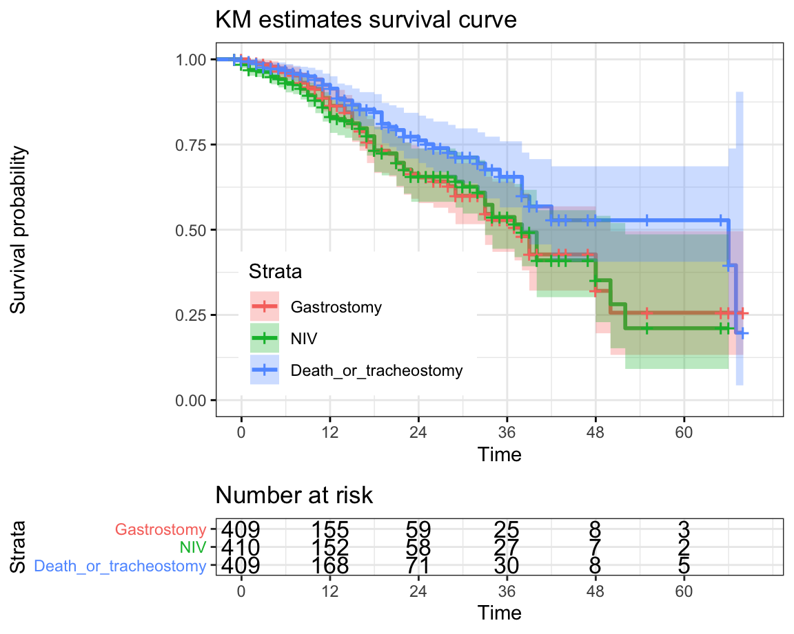

Lost to fu
should meet all the followings.
- not visited for the recent 6 months.
- can not be contacted (by phone) or refused to participate the registry any longer.
Refer
should meet all the followings.
- referred to other hospital.
- can not be contacted (by phone, up to 3 times) or refused to participate the registry any longer.
Note
Patients who were referred to other hospital should be contacted regularly (every 3 month) by phone, and the occurence of major events (gastrostomy, NIV, tracheostomy, death) should be monitored.
Undefined: should be one of the followings.
- under active follow-up.
- maybe belong to lost to fu category, but not contacted yet
- maybe belong to refer category, but not contacted yet
